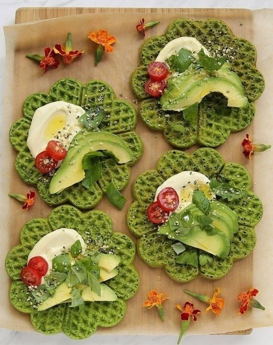

3 recetas saladas para usarla
Avocado Toast
La palta se puede untar sobre el pan, a modo de dip, o usarla como ingrediente principal, cortada en láminas no muy finas y combinarla con distintos vegetales y condimentos.
Con kale, limón y un poco de pimienta; con mango asado y semillas; con huevo poché y unas gotas de aceite de oliva crudo; o con tomate y albahaca.
Fideos con salsa de palta
Lleva 2 paltas maduras, hojas frescas de albahaca, 1 taza de tomates cherry, 1/2 taza de maíz en grano, 2 dientes de ajo, 2 cucharadas de jugo de limón, recién exprimido, semillas, 1 paquete de fideos a elección (tallarines, mostacholes,etc.), 1 cucharita de sal marina y pimienta negra recién molida, aceite y vinagre, 1/3 taza de aceite de oliva.
Para preparar este plato, hay que cocinar los fideos, procesar la albahaca con la palta, el ajo y los condimentos (menos la sal que es para el agua de cocción de los fideos) y echar la crema y el resto de los ingredientes sobre los fideos al momento de servir, mezclando bien.
Waffles verdes de espinaca con palta
Esta es una opción fresca para incorporar la palta en las preparaciones. Para hacerla se debe mezclar la lechuga, la naranja, la palta, los arándanos rojos secos y las almendras. Listo, ya está preparada. Quienes prefieran darle algo más de crocancia pueden optar por caramelizar las almendras.
Se aconseja aderezarla con una vinagreta de aceite de oliva, mostaza, miel, vinagre de sidra, zumo de naranja, jugo de limón, sal y pimienta negra.
